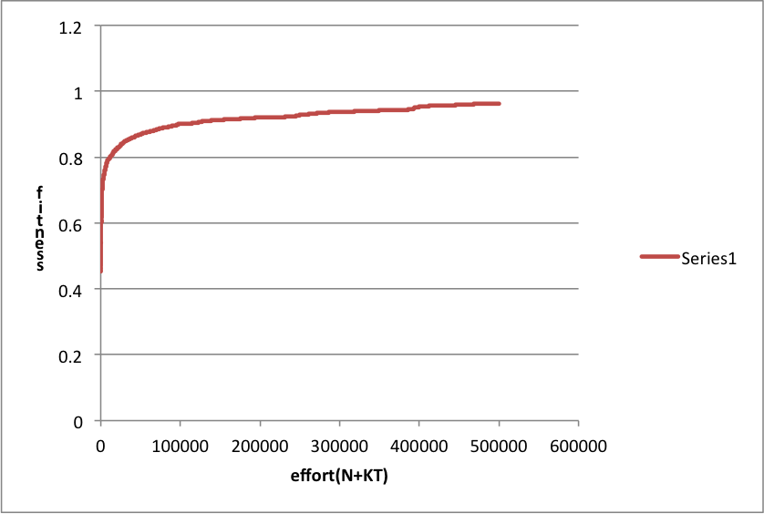
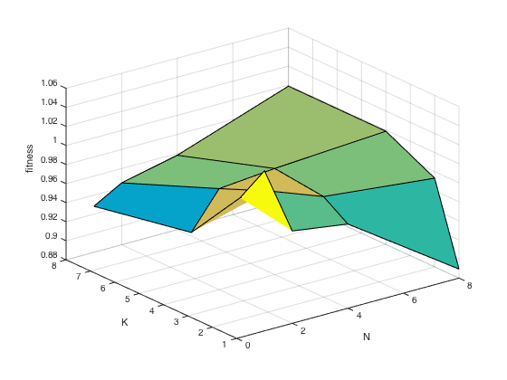

N=2, K=2 gave the best result

N=1, K=1 gave the best result
N=2, K=1 gave the best result

.png)
N=1, K=1 gave the best result

N=4, K=2 gave the best result
EECS 492 A1 Results
Shujie CHEN
September 27, 2015
The purpose of this project is to recreate Roger Alsing's work on genetic programming to create art. The population consists of approximations to a given image. Each image uses P polygons, where P=100 for the results on this page. N is the population size and K is the number of new children created per generation. T is the number of generations displayed in each animation. The fitness of the image is a measure of how closely it matches the original image. The learning curve shows how the fitness of the best approximation improves over time. The 3D graphs depict how the fitness after 25000 generations varies with N and K.
| Original image | Approximation | Learning curve | ||
|---|---|---|---|---|
| 96×96 pixels |
P=100, N=1, K=2 |
 | N=2, K=2 gave the best result | |
| 100×100 pixels |
P=100, N=2, K=1 |
 N=1, K=1 gave the best result | ||
| 102×102 pixels |
P=100, N=1, K=2 |
N=2, K=1 gave the best result |
||
| 128×128 pixels |
P=100, N=1, K=1 |
|
N=1, K=1 gave the best result |
|
| 100×100 pixels |
P=100, N=2, K=1 |
N=4, K=2 gave the best result |
Mutations used:
Random triangles were created by picking a point on the image with uniform distribution, then adding a Gaussian distribution of mean 0 and standard deviation 20% of the image width to the point to obtain the vertices. Random colors were picked using uniform distribution over the RGB color space.
Parents were selected from the comparision of the two fitness values: which means that everytime I let the gene mutation take place and compare it with the former fitness value. If the fitness value increases, then I will let the kids be the new parents for the next generation; if the fitness value decreases, I will kill the kids and keep the origin parents as the parents for the next generation. This algorithm is like Darwin's nature select theory, which means the changes are random, but only those "good" changers will be able to have their descendants, and this promises an increasing fitness value(but become slower later).